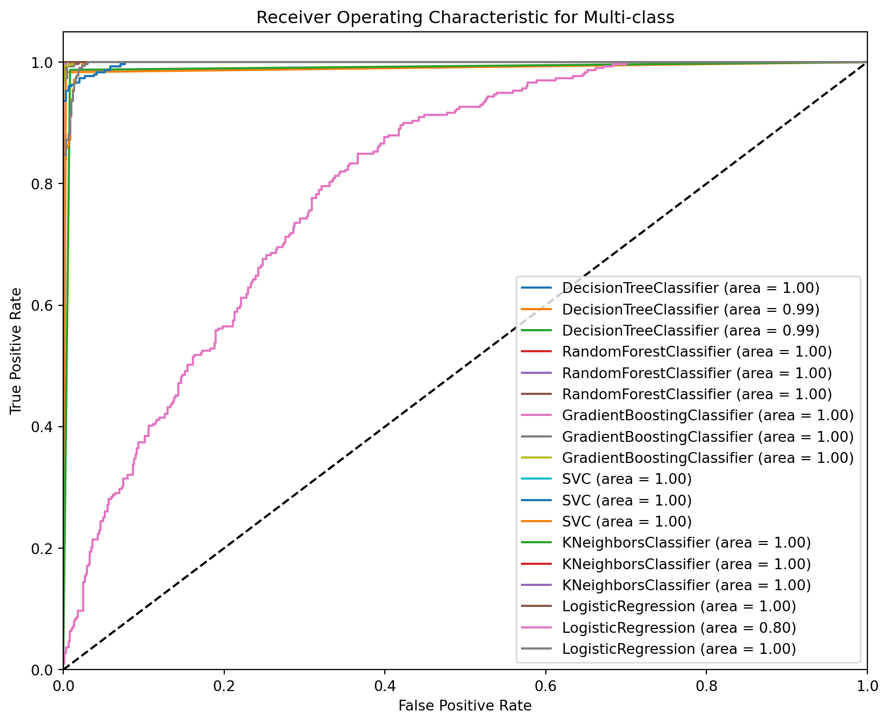
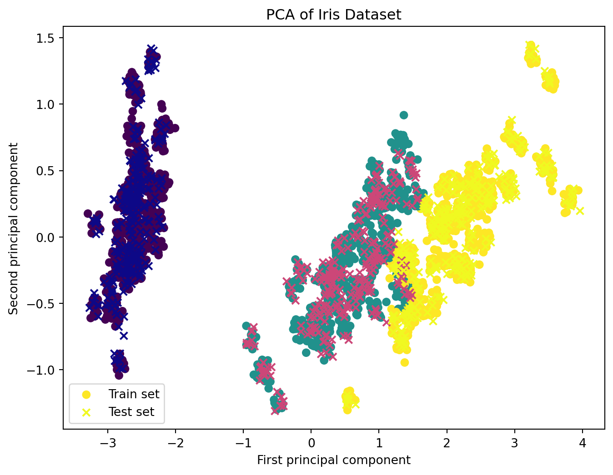
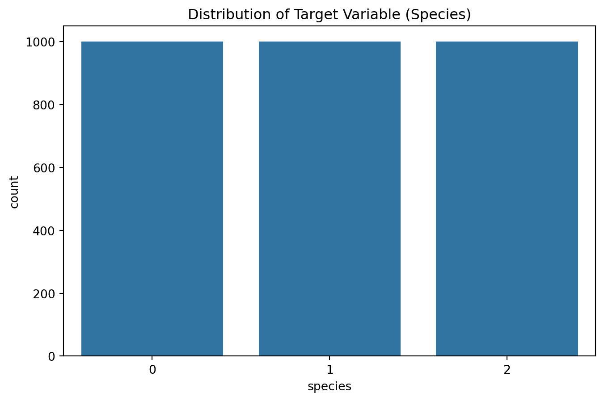
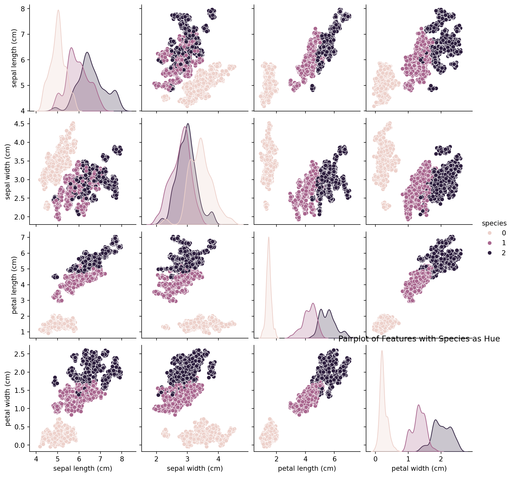
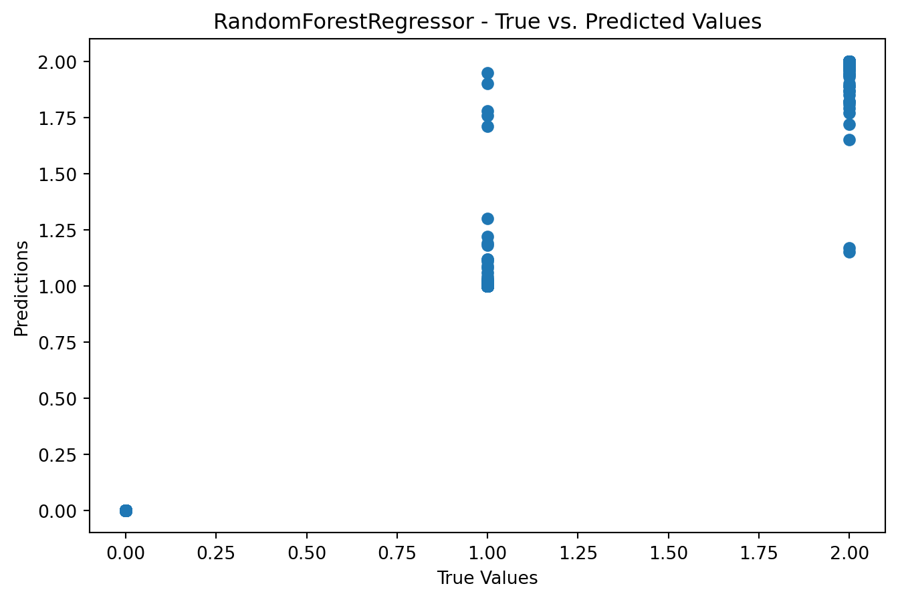
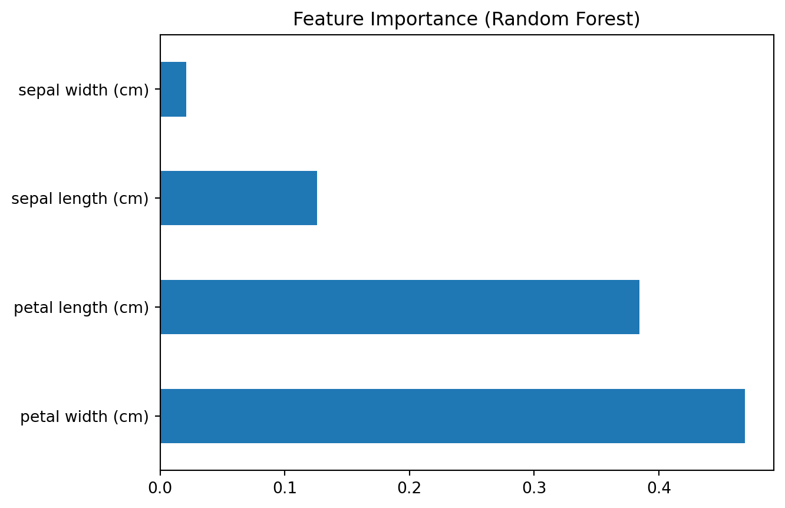

Advanced Classification techniques with Model Prediction Analysis
Implementing advanced classification techniques for precise model prediction analysis to enhance accuracy and efficiency
Introduction
Machine learning is a fascinating field that empowers computers to learn and make predictions or decisions without being explicitly programmed. One of the fundamental tasks in machine learning is classification, where the goal is to categorize data points into predefined classes or labels. In this blog post, we dive deep into the world of classification, exploring advanced techniques and their application on a real-world dataset.
The Iris dataset is a well-known benchmark in the machine learning community. It consists of measurements of four features from three different species of iris flowers. This seemingly simple dataset serves as an excellent playground for understanding and implementing classification algorithms. However, we won’t stop at the basics; we’ll explore advanced classification techniques, model tuning, and even dive into ensemble methods and neural networks.
Data Loading and Preliminary Analysis
# Importing essential librariesimport pandas as pdimport matplotlib.pyplot as pltimport seaborn as snsimport numpy as np# Load datasetiris_df = pd.read_csv('Iris_dataset.csv')# Basic dataset informationprint(iris_df.head())print(iris_df.describe())print(iris_df.info())# Visualizing the distribution of classessns.countplot(x='species', data=iris_df)plt.show()# Pairplot to explore relationships between featuressns.pairplot(iris_df, hue='species')plt.show()
from sklearn.model_selection import train_test_splitfrom sklearn.preprocessing import LabelEncoder, StandardScaler# Encoding categorical dataencoder = LabelEncoder()iris_df['species'] = encoder.fit_transform(iris_df['species'])# Splitting dataset into features and target variableX = iris_df.drop('species', axis=1)y = iris_df['species']# Splitting dataset into training and testing setsX_train, X_test, y_train, y_test = train_test_split(X, y, test_size=0.3, random_state=42)# Feature scalingscaler = StandardScaler()X_train = scaler.fit_transform(X_train)X_test = scaler.transform(X_test)
Exploratory Data Analysis (EDA)
# Correlation heatmapplt.figure(figsize=(10, 8))sns.heatmap(iris_df.corr(), annot=True, cmap='viridis')plt.show()# Advanced pairplot with distribution and regressionsns.pairplot(iris_df, kind='reg', hue='species')plt.show()
In this code, we introduce different types of classification models, including Random Forest Classifier, Gradient Boosting Classifier, Support Vector Classifier (SVC), K-Nearest Neighbors Classifier (KNN), and Logistic Regression.
For each model, we train it on the training data and evaluate its performance using accuracy and a classification report that includes precision, recall, and F1-score. This allows you to compare the performance of various classification algorithms on the Iris dataset.
Comparing the performance of the various classification models using ROC Curve analysis, here we discuss the plots of the ROC Curve for each model. This will involve calculating the True Positive Rate (TPR) and False Positive Rate (FPR) for each model and plotting them.
from sklearn.metrics import roc_curve, aucfrom sklearn.preprocessing import label_binarizefrom sklearn.multiclass import OneVsRestClassifierimport matplotlib.pyplot as plt# Binarize the output classes for ROC analysisy_bin = label_binarize(y, classes=[0, 1, 2])n_classes = y_bin.shape[1]# Splitting the data again for multiclass ROC analysisX_train, X_test, y_train_bin, y_test_bin = train_test_split(X, y_bin, test_size=0.3, random_state=42)# Classifier listclassifiers = [ OneVsRestClassifier(DecisionTreeClassifier()), OneVsRestClassifier(RandomForestClassifier()), OneVsRestClassifier(GradientBoostingClassifier()), OneVsRestClassifier(SVC(probability=True)), OneVsRestClassifier(KNeighborsClassifier()), OneVsRestClassifier(LogisticRegression())]# Plotting ROC Curvesplt.figure(figsize=(10, 8))# Compute ROC curve and ROC area for each classfor classifier in classifiers: classifier.fit(X_train, y_train_bin) y_score = classifier.predict_proba(X_test)# Compute ROC curve and ROC area for each classfor i inrange(n_classes): fpr, tpr, _ = roc_curve(y_test_bin[:, i], y_score[:, i]) roc_auc = auc(fpr, tpr) plt.plot(fpr, tpr, label=f'{classifier.estimator.__class__.__name__} (area = {roc_auc:.2f})')plt.plot([0, 1], [0, 1], 'k--')plt.xlim([0.0, 1.0])plt.ylim([0.0, 1.05])plt.xlabel('False Positive Rate')plt.ylabel('True Positive Rate')plt.title('Receiver Operating Characteristic for Multi-class')plt.legend(loc="lower right")plt.show()

This code will generate ROC curves for each of the classifiers used, providing a visual comparison of their performance in terms of the trade-off between the True Positive Rate and False Positive Rate. The area under the curve (AUC) is also displayed as a measure of the model’s performance, with a higher AUC indicating a better model. This analysis is crucial for understanding the performance of classification models, especially in multi-class settings.
Dimensionality Reduction and Visualization
from sklearn.decomposition import PCA# PCA for dimensionality reductionpca = PCA(n_components=2)X_train_pca = pca.fit_transform(X_train)X_test_pca = pca.transform(X_test)# Visualizing PCA resultsplt.figure(figsize=(8, 6))plt.scatter(X_train_pca[:, 0], X_train_pca[:, 1], c=y_train, cmap='viridis', label='Train set')plt.scatter(X_test_pca[:, 0], X_test_pca[:, 1], c=y_test, cmap='plasma', label='Test set', marker='x')plt.xlabel('First principal component')plt.ylabel('Second principal component')plt.legend()plt.title('PCA of Iris Dataset')plt.show()

Additional Advanced Analysis
1. Cross-Validation
Cross-validation is a technique used to evaluate the generalizability of a model by training and testing it on different subsets of the dataset.
from sklearn.model_selection import cross_val_score# Example using RandomForestClassifierrf_classifier = RandomForestClassifier()# Performing 10-fold cross-validationcv_scores = cross_val_score(rf_classifier, X, y, cv=10)print("Cross-Validation Scores for RandomForestClassifier:", cv_scores)print("Average Score:", np.mean(cv_scores))
Cross-Validation Scores for RandomForestClassifier: [0.99666667 1. 0.99333333 0.99333333 1. 0.99666667
0.99666667 0.99333333 1. 1. ]
Average Score: 0.9969999999999999
2. Ensemble Methods
Ensemble methods combine multiple models to improve the overall performance. Here, I will use an ensemble of different classifiers.
from sklearn.model_selection import train_test_splitfrom sklearn.preprocessing import LabelEncoder, StandardScalerimport seaborn as snsimport matplotlib.pyplot as plt# Encoding categorical dataencoder = LabelEncoder()iris_df['species'] = encoder.fit_transform(iris_df['species'])# Visualizing the distribution of the target variableplt.figure(figsize=(8, 5))sns.countplot(x='species', data=iris_df)plt.title('Distribution of Target Variable (Species)')plt.show()# Splitting dataset into features and target variableX = iris_df.drop('species', axis=1)y = iris_df['species']# Splitting dataset into training and testing setsX_train, X_test, y_train, y_test = train_test_split(X, y, test_size=0.3, random_state=42)# Feature scalingscaler = StandardScaler()X_train = scaler.fit_transform(X_train)X_test = scaler.transform(X_test)# Pairplot to explore relationships between featurespairplot_df = iris_df.copy()pairplot_df['species'] = encoder.inverse_transform(pairplot_df['species'])plt.figure(figsize=(10, 8))sns.pairplot(pairplot_df, hue='species')plt.title('Pairplot of Features with Species as Hue')plt.show()

<Figure size 960x768 with 0 Axes>

Model Building, Evaluation, and Visualization for Prediction
from sklearn.metrics import mean_squared_error, r2_scorefrom sklearn.linear_model import LinearRegressionfrom sklearn.tree import DecisionTreeRegressorfrom sklearn.ensemble import RandomForestRegressorimport matplotlib.pyplot as plt# Function to train and evaluate regression modelsdef train_evaluate_regression_model(model, X_train, y_train, X_test, y_test): model.fit(X_train, y_train) predictions = model.predict(X_test)# Model Evaluationprint(f'Model: {model.__class__.__name__}')print(f'Mean Squared Error: {mean_squared_error(y_test, predictions)}')print(f'R-squared (R2) Score: {r2_score(y_test, predictions)}')# Visualization plt.figure(figsize=(8, 5)) plt.scatter(y_test, predictions) plt.xlabel('True Values') plt.ylabel('Predictions') plt.title(f'{model.__class__.__name__} - True vs. Predicted Values') plt.show()# Linear Regressiontrain_evaluate_regression_model(LinearRegression(), X_train, y_train, X_test, y_test)# Decision Tree Regressortrain_evaluate_regression_model(DecisionTreeRegressor(), X_train, y_train, X_test, y_test)# Random Forest Regressortrain_evaluate_regression_model(RandomForestRegressor(), X_train, y_train, X_test, y_test)
Model: LinearRegression
Mean Squared Error: 0.047703003079178956
R-squared (R2) Score: 0.9284946222241109
Model: DecisionTreeRegressor
Mean Squared Error: 0.0077777777777777776
R-squared (R2) Score: 0.9883413432623143
Model: RandomForestRegressor
Mean Squared Error: 0.006041444444444443
R-squared (R2) Score: 0.990944055102883

Advanced Model Tuning and Analysis for Prediction
from sklearn.model_selection import GridSearchCV# Hyperparameter tuning for Random Forest Regressorparam_grid = {'n_estimators': [10, 50, 100],'max_depth': [None, 10, 20, 30],'min_samples_split': [2, 5, 10],'min_samples_leaf': [1, 2, 4]}grid_search = GridSearchCV(RandomForestRegressor(), param_grid, cv=5, scoring='neg_mean_squared_error')grid_search.fit(X_train, y_train)best_rf = grid_search.best_estimator_# Evaluating the tuned modelpredictions = best_rf.predict(X_test)print("Tuned Random Forest Regressor - Model Evaluation")print(f'Mean Squared Error: {mean_squared_error(y_test, predictions)}')print(f'R-squared (R2) Score: {r2_score(y_test, predictions)}')
Tuned Random Forest Regressor - Model Evaluation
Mean Squared Error: 0.0072306666666666665
R-squared (R2) Score: 0.9891614464876909
Feature Selection and Importance Analysis
Feature selection is crucial for improving model performance and reducing overfitting. Here, we use techniques like Recursive Feature Elimination (RFE) and feature importance analysis to select the most relevant features for classification or prediction.
from sklearn.feature_selection import RFEfrom sklearn.linear_model import LogisticRegression# Using Recursive Feature Elimination (RFE) with Logistic Regressionmodel = LogisticRegression()rfe = RFE(model, n_features_to_select=3) # Select the top 3 featuresfit = rfe.fit(X_train, y_train)# List of selected featuresselected_features = [feature for idx, feature inenumerate(X.columns) if fit.support_[idx]]print("Selected Features:", selected_features)
Additionally, we can analyze feature importance for tree-based models like Random Forest or Gradient Boosting to understand which features contribute the most to predictions.
from sklearn.ensemble import RandomForestClassifier# Feature Importance Analysis for Random Forest Classifierrf_model = RandomForestClassifier()rf_model.fit(X_train, y_train)# Plot feature importancefeature_importance = pd.Series(rf_model.feature_importances_, index=X.columns)feature_importance.nlargest(5).plot(kind='barh')plt.title("Feature Importance (Random Forest)")plt.show()

Handling Class Imbalance
In real-world datasets, class imbalance is common, where one class has significantly fewer samples than others. Techniques like oversampling, undersampling, and Synthetic Minority Over-sampling Technique (SMOTE) can be employed to address this issue.
from imblearn.over_sampling import SMOTE# Using SMOTE to handle class imbalancesmote = SMOTE(sampling_strategy='auto')X_train_resampled, y_train_resampled = smote.fit_resample(X_train, y_train)
Conclusion
In this journey through the Iris dataset and the realm of classification, we’ve covered a wide range of topics. Starting with data loading and preprocessing, we explored the relationships between features, ensuring that we understood our data thoroughly. We then introduced a variety of classification models, from decision trees to support vector machines, and compared their performance using robust evaluation metrics.
But we didn’t stop there. We delved into advanced techniques, including cross-validation to ensure the generalizability of our models, ensemble methods that combined the strengths of multiple classifiers, and even a taste of neural networks for classification tasks.
Our exploration of ROC curves allowed us to visualize and compare the trade-offs between true positive and false positive rates across different models, providing valuable insights into their performance.
In the end, classification is a powerful tool in the machine learning toolkit, with applications ranging from medical diagnosis to spam email filtering. The Iris dataset served as an ideal playground to learn and experiment with these techniques, but the knowledge gained can be applied to more complex and real-world classification problems.
As you continue your journey in machine learning, remember that classification is just the tip of the iceberg. The world of machine learning is vast and ever-evolving, and there are countless exciting challenges and opportunities awaiting those who dare to explore it further.